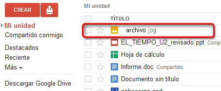

Encontraremos multitud de aplicaciones compatibles con Drive. Dependiendo del tipo de aplicación con el que estemos trabajando, se crearán unos tipos de archivo u otros.
Para comenzar, haremos clic sobre CREAR y sobre la opción Más. Aquí encontraremos las aplicaciones que tengamos descargadas.
Elegiremos la aplicación que deseemos de la lista y la abriremos haciendo doble clic sobre ella.
Una vez en ella, crearemos un archivo nuevo. Existen infinidad de aplicaciones disponibles, con lo que la forma de crear un archivo dependerá del tipo de aplicación que estemos utilizando.
Guardaremos el archivo creado. La mayoría de las aplicaciones nos permiten, además de almacenar el archivo en la bandeja de documentos de Mi Unidad, guardar los archivos de forma local.
En este caso hemos guardado nuestro archivo online y podremos visualizarlo desde la bandeja de Mi Unidad.
